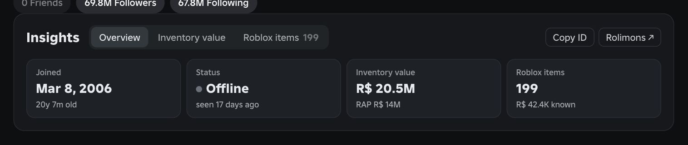
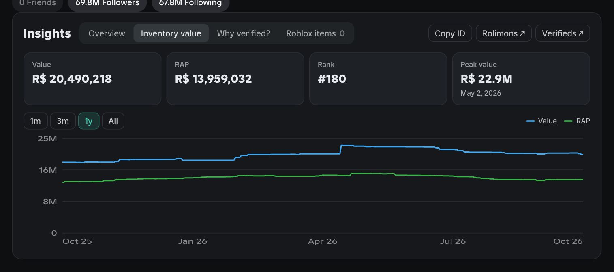

Game stats on every card
Every game card shows its estimated revenue with a trend arrow, plus total visits.
- Point at a card's stats for exact numbers and a 7-day player graph.
- Sort the Games page by revenue, visits or what's rising.
RoCreate is a free Chrome extension. It gives roblox.com a clean, flat look and adds the numbers creators care about: game revenue, your Robux, inventory value and more.
Free and open source. Works alongside RoValra.

Features
Every game card shows its estimated revenue with a trend arrow, plus total visits.

Estimated revenue, players and visits with this week's change, rating, favorites, global rank and average session time.

One tidy section on every profile, with tabs:

Value and RAP from Rolimons, with rank, peak value and a chart you can set to 1 month, 3 months, a year or all time.

Open the Robux menu to see your pending Robux and the funds of every group you manage. Click a group to open its revenue page.
Shown with example data.

Example names, except builderman.

Press Watch on a game page and follow its players and revenue from the toolbar popup.
Take everything, or build a copy with only the features and services you want.
A flat, dark Creator Hub style for the whole site. Every part can be switched off from the popup.
At a glance
| Feature | Where | Data from | Optional |
|---|---|---|---|
| Creator Hub theme | All of roblox.com | Nothing outside Roblox | Switch it off in the popup |
| Game stats | Game cards and game pages | Creator Exchange | Yes |
| Revenue per player, ID copy | Game pages | Creator Exchange, Roblox | With game stats |
| Watchlist | The toolbar popup | Creator Exchange | With game stats |
| Spike alerts | Desktop notifications | Creator Exchange | Yes, off until you switch it on |
| Robux menu | The top bar | Roblox | Yes |
| Profile insights | Profiles | Roblox, Rolimons, Creator Exchange | Yes, each part separately |
| Roblox admin badges | Names across the site | Roblox | Yes |
| Flagged account badges | Names across the site | RobloxVerifieds | Yes, off by default in custom builds |
Download
Get the full bundle in one click, or pick your features and the services RoCreate may contact. Anything you leave out isn't in your copy at all.
Go to the download pageFAQ
RoCreate runs only in your browser. There's no RoCreate server, no account and no tracking, and all of the code is open on GitHub. The privacy policy lists every site it talks to.
Yes. RoCreate is built to run next to RoValra, and each keeps its own features.
Game revenue estimates come from Creator Exchange, and inventory values from Rolimons. Everything else comes from Roblox itself. Revenue figures are estimates, not Roblox's official numbers.
Not yet. Until it is, you load it from the download page in three steps. The Chrome Web Store version will update itself.
Download again and unzip over the same folder. RoCreate notices the new version, reloads itself within a minute, and its popup shows what changed. Every release is on the changelog.
It only looks up what's on your screen, keeps the results on your device so pages load fast the next time, and waits out rate limits instead of hammering Roblox.
Creator Exchange only tracks games with enough players. Smaller games simply show no stats.
Yes. Every feature has a switch in the popup. You can also leave features out entirely on the download page, and then RoCreate never contacts their services.
No. RoCreate is an independent, free project and isn't affiliated with Roblox Corporation.